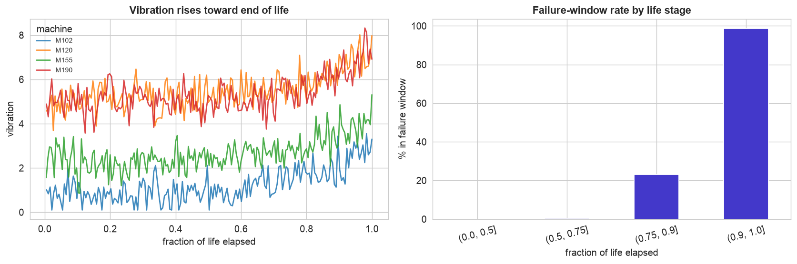
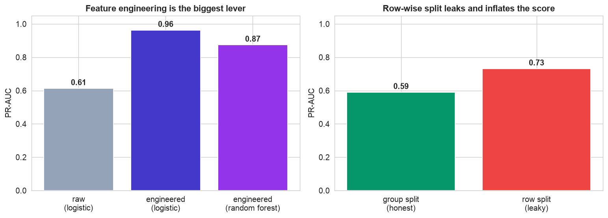
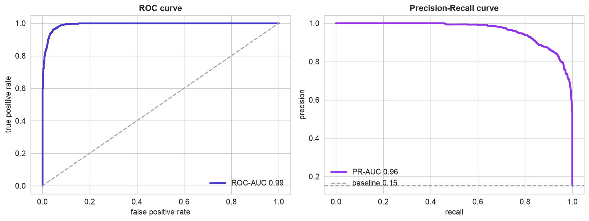
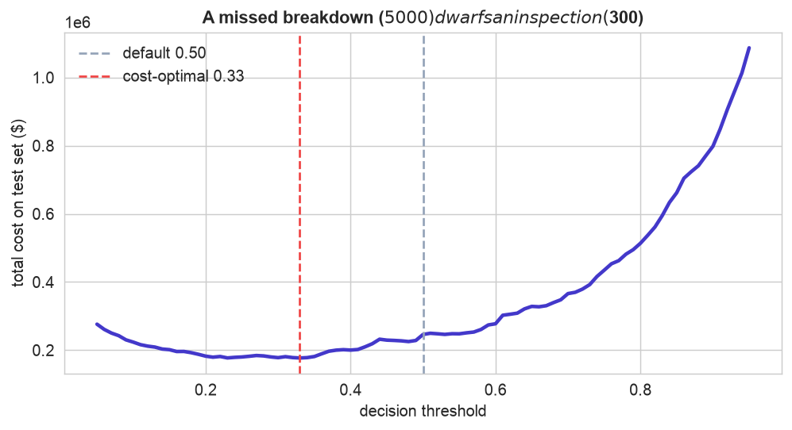
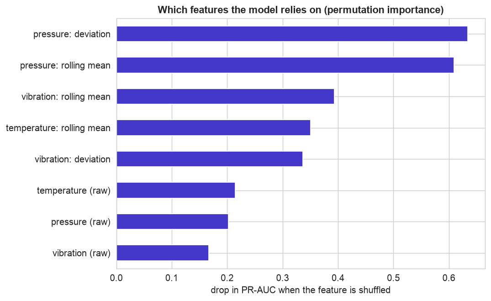

Fixing a machine on a schedule is cheap; having it die mid-shift is not. Predictive maintenance reads the sensor stream and predicts failure early enough to act. But raw sensor values are deceptive, every machine has its own normal, so this case study lives or dies on two ideas: turning the raw signals into trajectory features, and evaluating on machines the model has never seen.
The 12-step method runs as usual, but two steps carry the chapter: Step 6, engineering the raw sensors into degradation features (the single biggest lever), and Step 7, splitting by machine so a machine never appears in both training and test. Get those right and the model almost builds itself.
The 12-Step Method
The same repeatable loop, aimed at foreseeing failure. The companion notebook runs all twelve steps; the sections below tell the story and show the plots.
One row per machine per operating cycle: machine_id, cycle,
and raw sensors temperature, vibration, pressure, rpm, with the
target failure_within_20 (1 if the machine fails within the next 20 cycles). 180 machines run to
failure over widely varying lifetimes.
Define, Collect, Inspect, Clean (Steps 1–4)
Define the objective
For each machine at each cycle, predict whether it will fail within the next 20 cycles, early enough to schedule service. The costs are asymmetric: a missed breakdown (unplanned downtime, collateral damage, idle staff) runs into the thousands, while a needless inspection costs a few hundred, so we would rather over-warn than miss.
Collect the data
A run-to-failure sensor log: each machine contributes a time-ordered sequence of readings from installation to failure. That grouped, sequential shape drives the two key decisions to come.
Inspect the data
180 machines, lifetimes from 70 to 229 cycles, and a failure-window rate of about 14%, the minority class, so accuracy is again the wrong yardstick. A few dropped sensor reads and duplicate rows need cleaning.
Clean the data
| Problem | Detail | Fix |
|---|---|---|
| Duplicates | 20 repeated (machine, cycle) rows | deduplicate |
| Ordering | features are computed over time per machine | sort by machine then cycle |
| Missing values | 102 dropped temperature reads | impute in the pipeline (train only) |
Sorting is not cosmetic here: the rolling and trend features in Step 6 are computed within each machine, over time, so the rows must be in machine-then-cycle order first. After cleaning, 27,585 rows remain.
Visualize, Engineer & Split (Steps 5–7)
Visualize the degradation
Plotting a sensor against fraction-of-life shows the pattern, readings drift, then spike near failure, and the trap: every machine sits at a different baseline, so the same raw value means different things on different machines.

Degradation, and the baseline trap. Left, vibration for four machines against fraction of life: all trend upward and spike near the end, but they start and ride at different levels, so a raw reading of, say, 3.0 is alarming for one machine and normal for another. Right, the share of readings in a failure window climbs steeply in the last tenth of life. The signal is real, but it is relative to each machine, which is exactly what the next step captures.
Engineer features from the raw signals
This is the heart of the chapter. From each raw sensor we derive features that describe how the machine is changing, not just its current value: a rolling mean (smoothed level), a rolling standard deviation (is it getting jittery?), a slope (the trend over recent cycles), and a deviation from the machine's own early-life baseline. That deviation is what makes readings comparable across machines.
Split by machine, not by row
The subtle, expensive mistake: split rows at random and cycle 90 of a machine lands in training while cycle 91 of the
same machine lands in test, two nearly identical readings. The model memorizes each machine and looks
brilliant, then flops on a genuinely new one. Splitting by machine (GroupShuffleSplit)
is the honest test. The gap is real: on these sensors a naive row split scored a flattering
PR-AUC 0.73, the honest machine split a sober 0.59, that 0.14 is pure illusion.
We group-split everything.
Build and Validate (Steps 8–9)
Does the engineering pay?
The cleanest experiment in the book: same logistic model, once on the raw sensors, once on the engineered features.

Left, feature engineering is the biggest lever. On the raw sensors, logistic regression manages a mediocre PR-AUC of 0.61, the absolute values are too ambiguous across machines. The same model on the engineered features leaps to 0.96; a random forest on those features actually does a little worse (0.87). Right, the split matters too: a leaky row-wise split reports an inflated 0.73 where the honest machine-wise split reports 0.59. Two decisions, both worth more than the choice of algorithm.
Validate across machines
Cross-validating with GroupKFold (each fold holds out whole machines) gives a PR-AUC around 0.96, matching the test score, so the result is stable, not a lucky split. Because the failure window is rare, the precision-recall curve is the honest lens.

Strong, and honestly so. The ROC curve is near-perfect (AUC 0.99), and the precision-recall curve sits far above the 0.14 failure-window baseline (PR-AUC 0.96), the model reliably ranks about-to-fail readings above healthy ones. Reported on held-out machines, these numbers reflect real generalization, not memorized quirks.
Threshold, Interpret & Deploy (Steps 10–12)
Tune the threshold to cost
Because a breakdown costs many times an inspection, the default 0.5 is too cautious, we would rather inspect a few healthy machines than miss a failure.

Err on the side of caution. Counting a missed breakdown at $5,000 and a needless inspection at $300, the total-cost curve bottoms out below 0.5 (around 0.33). At that cutoff the model catches about 99% of impending failures while keeping false alarms manageable. The threshold is where maintenance policy, not statistics, has the final say.
Interpret: which signals warn?
Permutation importance, how far the model's PR-AUC falls when a feature is scrambled, shows what the model actually relies on.

The engineered trajectory features dominate. The features the model leans on most are the deviation of pressure and vibration from each machine's baseline and the rolling (smoothed) levels, the raw snapshot readings barely register on their own. This is the payoff of Step 6 made visible: the model succeeds by tracking each machine's drift from its own normal, exactly how a maintenance engineer thinks, not "is the temperature high?" but "is this machine running hotter and rougher than it used to?"
Deploy on new data
Saved as one joblib pipeline, the model scores a machine it has never seen in a single call: a degrading
held-out machine trips the threshold and gets a maintenance ticket (probability 1.00), a healthy one is left alone
(0.00). In production the engineered features are recomputed from each machine's live sensor stream every cycle;
when the failure-soon probability crosses the cost-tuned threshold, the system schedules service. As machines age or
are replaced their baselines shift, so drift monitoring and periodic retraining on
fresh run-to-failure data are essential, the subject of Chapter 126.
Communicate: the Plain-English Write-Up (Step 12)
For a non-technical reader
What is this? We built an early-warning system that reads each machine's sensors and estimates how likely it is to break down soon, so the plant can fix it on a planned schedule instead of scrambling after an unplanned failure.
What goes in, and what comes out
Inputs: the ordinary sensor readings a machine already reports each cycle, temperature, vibration, pressure, and speed, together with how those readings have been trending and how far they have drifted from that machine's own normal. Output: a probability that the machine will fail within the next 20 operating cycles, which becomes a "schedule maintenance / keep running" decision.
The decisions we made, and why
- ✓We did not feed the model the raw readings alone. Because every machine runs a little hot or cold to begin with, a single reading is ambiguous. Instead we gave it the trend and the change from each machine's own baseline, which is what actually signals trouble. This one change was the biggest improvement of the whole project.
- ✓We tested on machines the model had never seen, not just on later readings from the same machines. Otherwise the model can "recognize" a familiar machine and look better than it really is, then disappoint on a brand-new unit in the field.
- ✓We set the alarm to trip early, because a surprise breakdown is far more expensive than an unnecessary inspection. We would rather check a few healthy machines than miss a real failure.
How good is it, in plain terms
On machines it had never seen, the system catches about 99% of impending failures with enough lead time to act, typically dozens of cycles of warning before the breakdown. That turns firefighting into planned, scheduled maintenance.
What actually warns of failure
Not a high absolute reading, but a machine drifting away from its own normal and trending the wrong way, running progressively hotter, rougher, or at falling pressure. Bottom line: the clever part of this project was not the algorithm, it was turning raw sensor numbers into the right features and testing honestly on unseen machines.
Run the entire project in Python
The companion notebook is the full 12-step pipeline: it loads and cleans the run-to-failure log, plots the degradation, engineers rolling, trend, and deviation features from the raw sensors, demonstrates the row-split leakage, splits by machine, compares raw against engineered features, validates with GroupKFold, draws the ROC and precision-recall curves, tunes the threshold to cost, ranks the features with permutation importance, and scores a new machine, with every table and chart explained.
View opens the rendered notebook instantly.
Open in Colab runs it live. To run locally, install numpy, pandas,
matplotlib, seaborn, and scikit-learn.
🎓 Key Takeaways
- ✓Engineer features from the raw signals: rolling level, trend, and deviation from each machine's baseline, the biggest lever (PR-AUC 0.61 raw to 0.96 engineered).
- ✓Split by machine, not by row: a row-wise split leaks and inflated PR-AUC from an honest 0.59 to a flattering 0.73.
- ✓The failure window is rare, so judge by precision, recall, and PR-AUC, and cross-validate with GroupKFold.
- ✓Tune the threshold to cost: a missed breakdown dwarfs an inspection, so flag early and catch about 99% of failures.
- ✓The warning signs are trajectories, drift and trend, not raw values; deploy on each machine's live stream and watch for drift.
Take It Further
Five ways to extend the project in the notebook:
Sweep the prediction horizon
Predict failure within 5, 10, 20, 40, 60 cycles. Where is the sweet spot between lead time and accuracy?
Feature-family ablation
Add rolling, then slope, then deviation features and watch PR-AUC. Which family carries it?
A gradient-boosting rival
Does a boosted model beat the logistic one once the features are engineered?
Measure the alert lead time
For each failing machine, how many cycles of warning does the model give before failure?
Plot one machine's decline
Track a single machine's failure probability over its life and watch it cross the alert line.
All five, worked in a companion notebook
A second notebook, Take It Further, rebuilds the Chapter 122 model and works every one of these five extensions with visuals and explanations, the horizon sweet spot, a feature-family ablation, a gradient-boosting rival, the alert lead time, and one machine's probability climbing over its life, closing with a plain-English summary.
Quiz: Test Yourself
Eight questions on predictive maintenance and feature engineering. Answer them, hit Check Answers, and keep refining until you score 100%. Your progress is saved, so you can hop back to the chapter and return anytime.
We have predicted a yes/no event twice. The next case study blends the unsupervised and supervised worlds. Chapter 123 · Customer Segmentation & Targeting clusters customers into segments, then builds a model to decide whom to target, measuring the lift over an untargeted campaign.